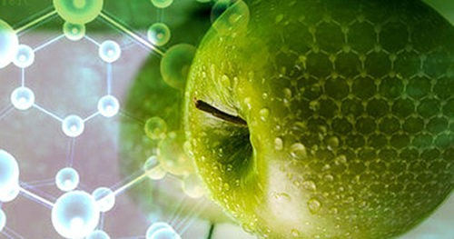

NanoAlimentos

La nanotecnología encuentra aplicaciones significativas en la industria alimentaria, abarcando áreas como la calidad y seguridad de los alimentos, la innovación de productos y el envasado. Esta tecnología aporta mejoras en las propiedades funcionales, por ejemplo, permitiendo que alimentos con bajo contenido de sodio tengan un sabor salado.
En el contexto de la industria alimentaria, la aplicación de la nanociencia y la nanotecnología es un aspecto crucial para su desarrollo. Esto beneficiaría tanto a los consumidores locales como a la economía nacional al permitir al país competir internacionalmente con productos alimentarios innovadores.